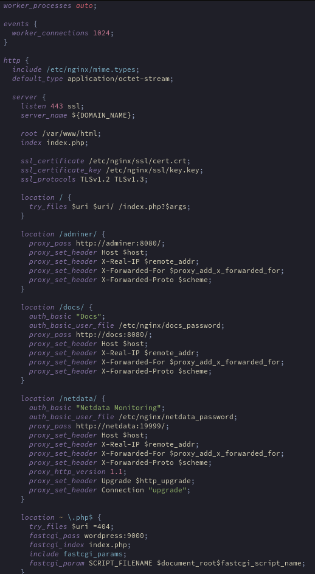

This sets the number of worker processes used by nginx based on the number of available cpu cores.
Deals with event processing and connections handling behaviour
Max number of connections per worker thread
Can be set higher
General http server settings
Request handling and routing
File which maps file extensions to MIME types
Tells browsers how to interpret served files
If MIME type is not found it is uses application/octet-stream
Means ‘generic binary data’
Browser will typically download rather than display/run
Define the ports listened to and the domain names they respond to
Specifies the port to listen on and whether to use SSL/TLS (http vs https)
The domain name that this server responds to
${DOMAIN_NAME} will be repaced using the value from .env by sed in dockerfile during build
Location of the root of the website filesystem
Combined with URI to find the requested file
/var/www/html is a widely used convention, any location can be used
The default file nginx will serve when a directory is requested
Will search in the order specified
403 if not found
Specify the SSL/TLS public certificate and private key to be used for https encryption
Files are PEM encoded (Privacy Enhanced Mail). This is an old and no longer used encryption standard for email but it’s encoding format is still used. Both files could be .pem but .crt and .key are more commonly used
The SSL/TLS protocol versions that the server will accept
TLSv1.2 (2008, still widely used, supported everywhere)
TLSv1.3 (2018, latest version, faster, most secure)
SSLv2/v3 are broken and have known vulnerabilities, TLSv1.0/v1.1 are deprecated and no longer considered secure
Routing rules
If URL matches rule → serve file / send to handler
location / - catch all, request not matching more specific blocks
~* = case insensitive regex
^ = must begin with
* = 0 or more characters
\. = literal . (. normally represents ‘any char’)
$ = end of string
$uri - Try to serve as a file (images, CSS, JS, etc.)
$uri/ - Try to serve as a directory (looks for index files)
/index.php?$args - Fallback: send to WordPress with query string
Passes requests for /adminer/* to the adminer container port 8080
The trailing ‘/’ removes the ‘/adminer/’ prefix
Uses http as nginx handles ssl for external connections. Internal docker network connections are safe to use http
Tells the adminer container what host the user requested
$host created by nginx
Without:
User requests: https://user.42.fr/adminer/
Nginx forwards to: http://adminer:8080
Adminer receives: Host: adminer:8080
With:
Adminer receives: Host: user.42.fr
Required for redirects etc adminer:8080/login vs user.42.fr/login
Tells the container the ip address that the request originated from
$remote_addr created by nginx
Without this the requests would appear to be from nginx
Logs etc would not show who tried to connect externally, only that a request came from nginx
Preserves the chain of client IP address through proxies
$proxy_add_x_forwarded_for created dby nginx
E.g. X-Forwarded-For: 203.0.113.195, 70.41.3.18
Also useful for logging real client IP addresses
Tells the adminer backend which protocol was used (http or https)
$scheme created by nginx
Adminer knows that the connection to the client is behind https even though the internal connection is http
Adminer will used https:// instead of http:// for redirects
See adminer section
The string that will appear in the password popup
The file containing the username and password hash of the authorised user
Forces Nginx to use HTTP/1.1 when communicating with netdata
WebSockets and connection upgrades require HTTP/1.1
WebSockets upgrade a single HTTP connection to a bi-directional communication channel (live data stream from netdata)
Tells the server to switch protocols from HTTP to WebSocket
Forces Nginx to include the correct “Connection: upgrade” header in the proxied request
Security check
Without:
Request: /uploads/image.jpg/fake.php
PHP-FPM: "fake.php doesn't exist, but image.jpg does"
PHP-FPM: Executes image.jpg as PHP code! ✗
Attacker: Can upload malicious "image" with PHP code
With:
Request: /fake.php (doesn't exist)
Nginx: "fake.php doesn't exist" → Returns 404 ✓
Never passes to PHP-FPM
Send php requests to PHP-FPM on wordpress server, port 9000
If directory requested, try `index.php` as the default file
Includes a file with standard FastCGI parameters
/etc/nginx/fastcgi_params
Tells PHP-FPM which file to execute
$document_root = /var/www/html
$fastcgi_script_name = /index.php
SCRIPT_FILENAME = /var/www/html/index.php